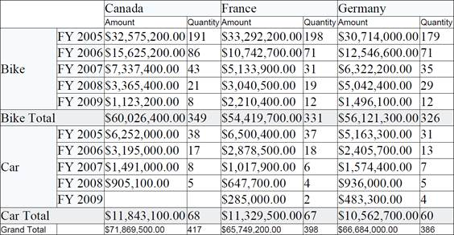

BI Pivot Grid for Silverlight can be exported as a PDF file using Essential PDF. The user can export the contents of the PivotGrid to the PDF document for further archival, references and analysis purposes.
Call Export Method
The GridPdfExport class provides support for exporting data from a PivotGrid to a PDF document for verification. The following dlls should be added, along with the default dlls in the reference folder:
· Syncfusion.PivotGridConverter.Silverlight
|
[C#] //// Export to PDF SaveFileDialog saveFileDialog = new SaveFileDialog { DefaultExt = ".pdf", Filter = "(*.pdf)|*.pdf" }; if (saveFileDialog.ShowDialog() == true)
|
|
[VB] ’ Export to PDF Dim saveFileDialog As New SaveFileDialog() With { _ Key .DefaultExt = ".pdf", _ Key .Filter = "(*.pdf)|*.pdf" _ } If saveFileDialog.ShowDialog() = True Then Dim stream As Stream = saveFileDialog.OpenFile() Dim gridPdfExport As New GridPdfExport(Me.pivotGrid1) gridPdfExport.Export(stream) stream.Close() End If |

Figure 16: Exported PDF from PivotGrid